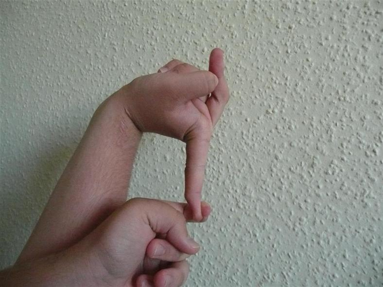

Hello World! Let me introduce you to Ehlers Danlos Syndromes
A Collection of Genetic Connective Tissue Disorders
As defined by Wikipedia.org are a group of thirteen genetic connective-tissue disorders that are in the current classification, with a fourteenth type discovered in 2018. Symptoms may include loose joints, joint pain, stretchy velvety skin, and abnormal scar formation. These may be noticed at birth or in early childhood. Complications may include aortic dissection, joint dislocations, scoliosis, chronic pain, or early osteoarthritis.

Photo by Jahangiri FR1, Al Eissa S2, Sayegh S2, Al Helal F2, Al-Sharif SA3, Annaim MM3, Muhammad S4, Aziz T
There are 13 recognized types of Ehlers Danlos Syndromes
- Hypermobile EDS
- Classical EDS
- Vascular variant of Ehlers–Danlos syndrome
- Kyphoscoliosis EDS
- Arthrochalasia EDS
- Dermatosparaxis EDS
- Brittle-cornea syndrome
- Classical-like EDS
- Spondylodysplastic EDS
- Musculocontractural EDS
- Myopathic EDS
- Periodontal EDS
- Cardiac-valvular EDS
Common Symptoms for my type, Hypermobile EDS, include
- Joint Dislocation
- Disfunction of the Autonomic Nervous System
- Mast Cell Deregulation
- Gastroparesis
- Syncope
- Chronic Nerve Pain
- CSF Leaks
- And many more... for a fuller list please visit the Ehlers-Danlos Society